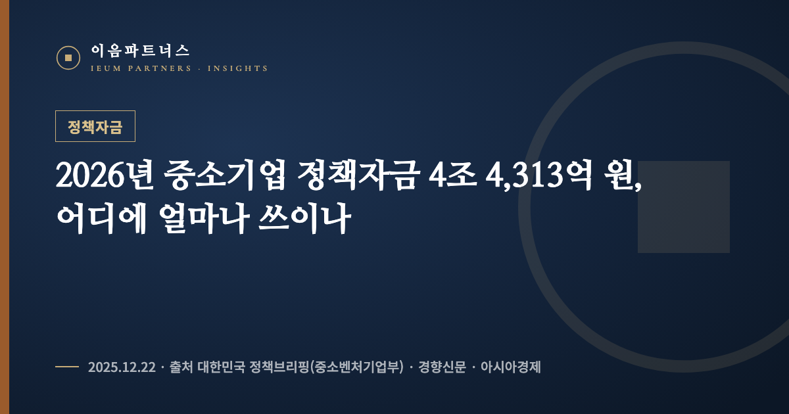

2026년 중소기업 정책자금 4조 4,313억 원, 어디에 얼마나 쓰이나

중소벤처기업부(이하 중기부)는 2025년 12월 22일 ‘2026년 중소기업 정책자금 운용계획’을 발표했습니다. 2026년 공급 규모는 총 4조 4,313억 원으로, 융자 4조 643억 원과 민간 금융기관 대출에 대한 이차보전(정부가 은행 대출 이자 일부를 대신 부담하는 방식) 3,670억 원(공급 기준)으로 이뤄집니다(대한민국 정책브리핑). 이 글에서는 자금별 규모와 달라진 점, 대표님이 확인할 것을 정리합니다.
정책자금은 업력과 성장 단계, 자금 용도에 따라 신청할 수 있는 자금이 나뉩니다. 우리 회사가 어느 칸에 해당하는지부터 알아야 준비가 쉬워지니, 판단이 어렵다면 카카오톡 채널 이음파트너스에서 함께 정리해 볼 수 있습니다.
어디에 얼마나 쓰이나
| 구분 | 내용 |
|---|---|
| 혁신창업사업화자금 | 1조 6,058억 원(업력 7년 미만 창업기업) |
| 신시장진출지원자금·신성장기반자금 | 합쳐서 약 1조 7천억 원(성장기 기업) |
| 재도전 기업 지원 | 6,125억 원(재창업·사업 전환 등) |
| 긴급경영안정자금 | 2,500억 원(일시적 경영 애로·재해 피해) |
| 밸류체인안정화자금 | 1,985억 원(발주서 기반 생산자금·매출채권 현금화) |
중기부는 정책자금의 60% 이상인 2조 4,400억 원 이상을 비수도권 기업에 공급하고, 비수도권 비중을 계속 늘린다는 방침입니다(경향신문). 밸류체인안정화자금 1,985억 원은 중진공이 2026년 1월 공고한 규모입니다(아시아경제).
2026년에 무엇이 달라졌나
① AI·K-뷰티·수출 기업 우대
AI를 도입하거나 AI 전환(AX)을 추진하는 기업을 위해 1,400억 원 규모의 ‘AX 스프린트 우대트랙’이 생겼습니다. 최대 대출 잔액 한도를 60억 원에서 100억 원으로 넓히고 금리 우대와 신속 평가를 더합니다. K-뷰티론은 200억 원에서 400억 원으로, 기업당 연간 한도는 2억 원에서 3억 원으로 늘었고, 내수기업의 수출기업 전환을 위한 운전자금 한도는 최대 10억 원까지 커졌습니다.
② 신청은 쉽게, 관리는 엄격하게
중기부는 “기업이 기초 정보만 입력하면 적합한 자금을 추천받을 수 있는” 정책자금 내비게이션을 새로 도입했습니다(대한민국 정책브리핑). 유망 기업은 지원 횟수가 5년간 최대 5회로 늘어난 반면, 자금 부정 사용이 확인되면 융자 신청을 제한하는 ‘원스트라이크 아웃제’도 도입됐습니다. 신청은 회사가 직접 하고, 지원 여부와 금액은 각 기관 심사로 정해집니다. 전체 예산이 크다고 해서 개별 회사의 한도가 보장되는 것은 아닙니다.
2027년은 어떻게 될까
2026년 9월 국무회의를 통과한 2027년 중기부 예산안에는 정책자금 융자 4조 4천억 원과 민간 대출 1조 원 규모의 이차보전을 합친 중소기업 금융지원 5조 4천억 원이 담겼습니다(대한민국 정책브리핑). 국회 심의를 거쳐 확정되는 숫자이므로, 최종 계획은 중기부 발표로 확인하시길 권합니다.
대표님이 지금 확인할 것
- 우리 회사 업력(7년 미만인지)과 성장 단계에 맞는 자금이 무엇인지
- 사업장이 비수도권인지, AI 전환이나 수출처럼 우대 요소가 있는지
- 이미 받은 정책자금을 약정한 용도대로 쓰고 있는지
- 궁금한 점은 정책자금 전담 콜센터(1811-3655)나 관할 중진공 지역본·지부에 문의했는지
참고한 자료
- 내년 중소기업 정책자금 4조 4000억 원 공급…60% 이상 비수도권에 — 대한민국 정책브리핑(중소벤처기업부) (2025.12.22)
- 새해 ‘중기 정책자금’ 4조4300억원···7년 미만 창업기업에 1조6천억 — 경향신문 (2025.12.22)
- 중진공, 올해 밸류체인안정화 자금 총 1985억원 공급 — 아시아경제 (2026.01.20)
- 국가가 함께하는 중소벤처 성장사다리 — 대한민국 정책브리핑(중소벤처기업부) (2026.09.03)
우리 회사에 맞는 정책자금이 무엇인지 한 번에 정리해 보고 싶다면 카카오톡 채널 이음파트너스로 편하게 물어봐 주세요.
※ 이 글은 일반적인 정보 제공을 위한 것으로, 개별 사안은 세무사·노무사 등 전문가와 함께 확인하시기 바랍니다.